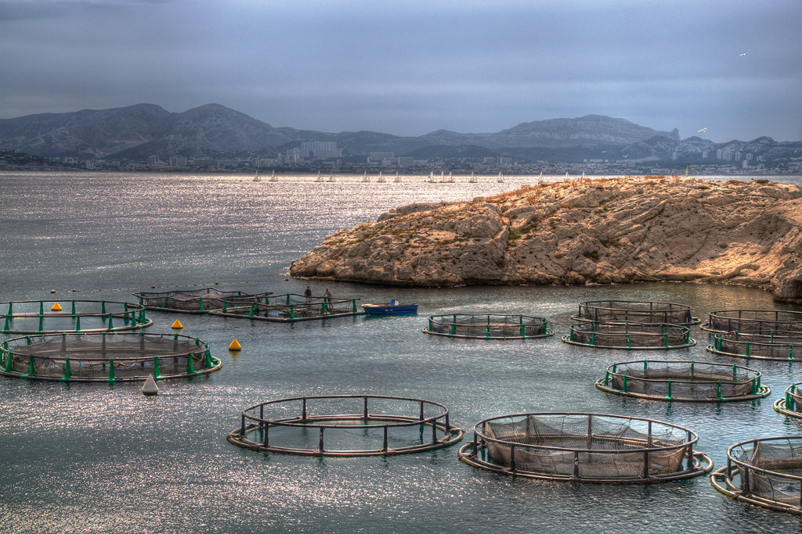
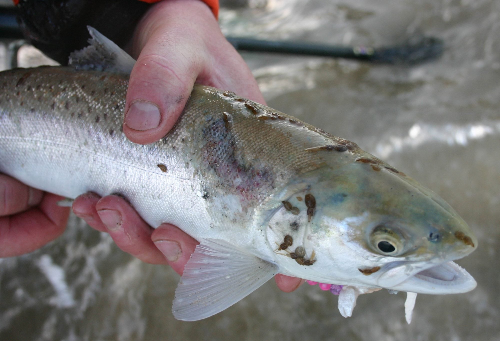
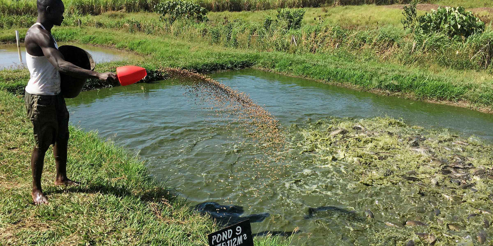

Environment
Many fish farms are unsustainable because they disrupt local habitats and ecosystems. For example, on the coast of Southwestern Asian countries ecosystems are destroyed to create shrimp and fish farms. The ecosystem provided a barrier against hurricanes, cyclones, and tsunamis. A fish farm disrupts ecosystems affecting several species.
When a fish farm closes, the soil near the fish farm remains hypersaline, acidic, and eroded. It will take a long time for the soil to recover to the state before the fish farm. The soil becomes useless for future agricultural purposes. The water runoff of certain fish farms consist of feces, uneaten food, an dead fish contaminate
local water supplies.

What Affects the Fish
Disease, Pest, and Bacteria
The high concentration of fish leads to disease, pest, and bacteria infesting the fish farms. It is common to find pests like sea lice in fish farms which pose a major threat to the fishes' health but can also cause harm. Salmon suffer the most from sea lice because they eat away at the flesh of their heads and this leaves an infection. An adult salmon could survive the infection but juvenile salmon are affected much worse and die from the infection.There are many factors on fish farms that make diseases and bacteria worse. These pathogens can infect wild life because they don’t have any immunity to foreign pathogens. Diseases that infect fish farms are usually lethal and can affect a large population of the fish at the farm. Chemicals
Pesticides are used to treat sea lice but this can irritate the skin and mucus membranes of the fish and makes them susceptible to germs. In some cases, pesticides are ineffective against sea lice because they have evolved to become resistant to the pesticides. Fish farmers put chemicals like PCB in the fishmeal in order to make the fish grow faster and bigger. PCB causes cancer in animals and the production of it has been banned in the US. Salmon found from fish farms have high levels of PCB. Other chemicals like dibutyltin, Polybrominated Diphenyl Ether (PDBE), and dioxins. Dibutyltin can increase the risk of prediabetes and obesity. PDBE can alter thyroid hormone homeostasis and cause thyroid dysfunction which can lead to development of thyroid cancer. The water runoff of fish farms can contaminate local water supplies. 
United States
54 Glen Creek Ave.
Poughkeepsie, NY 12603
Ozean